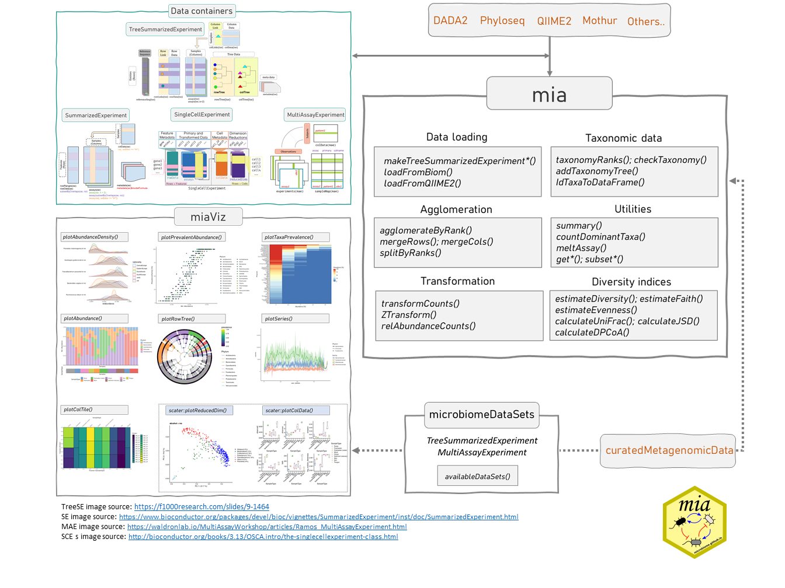
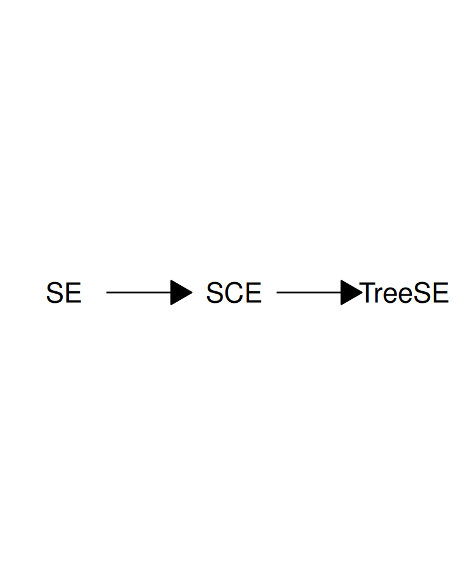

2 miaverse
This chapter provides an overview of the miaverse ecosystem. Section 2.1 aims to describe the relationship between data containers utilized in miaverse. Section 2.2 details the packages involved, while Section 2.3 provides guidance on installing these packages.
miaverse (MIcrobiome Analysis uniVERSE) is an actively developed R/Bioconductor framework for microbiome downstream analysis. It becomes particularly relevant when working with abundance tables derived from sequencing data, whether from shotgun metagenomics or 16S rRNA sequencing. Before utilizing miaverse, sequencing data must undergo preprocessing to convert raw sequence reads into abundance tables.
miaverse consists of multiple R/Bioc packages and this online book that you are reading. The idea is not only to offer tools for microbiome downstream analysis but also to serve as a resource for valuable insights, offering guidance on conducting microbiome data analysis and developing effective microbiome data science workflows.
The key concept of miaverse lies in its utilization of SummarizedExperiment-based data containers. This design choice enhances interoperability and versatility within the broader Bioconductor framework, facilitating access to an expanding array of tools. In practice, this approach allows for the integration of promising methods from related fields, such as single-cell sequencing.

2.1 Data containers
As discussed, miaverse is built upon TreeSummarizedExperiment (TreeSE) data container. TreeSE is expanded from SingleCellExperiment (SCE) by incorporating additional slots tailored for microbiome analysis. The SCE class is designed for single-cell sequencing (Lun and Risso 2020). Bioconductor offers wide variety of tools for this field including online book Orchestrating Single-Cell Analysis in Bioconductor (OSCA) (Amezquita et al. 2020). SCE, on the other hand, is further derived from the SummarizedExperiment (SE) class. This hierarchical relationship among data containers means that all methods applicable to SCE and SE objects can also be applied to TreeSE) objects.
SummarizedExperiment (
SE) (Morgan et al. 2020) is a generic and highly optimized container for complex data structures. It has become a common choice for analyzing various types of biomedical profiling data, such as RNAseq, ChIp-Seq, microarrays, flow cytometry, proteomics, and single-cell sequencing.SingleCellExperiment (
SCE) (Lun and Risso 2020) was developed as an extension to store copies of data to same data container.TreeSummarizedExperiment (
TreeSE) (R. Huang 2020) was developed as an extension to incorporate hierarchical information (such as phylogenetic trees and sample hierarchies) and reference sequences.

MultiAssayExperiment (MAE) (Ramos et al. 2017) provides an organized way to bind several different data containers together in a single object. For example, we can bind microbiome data (in TreeSE container) with metabolomic profiling data (in SE) container, with (partially) shared sample metadata. This is convenient and robust for instance, in subsetting and other data manipulation tasks. Microbiome data can be part of multiomics experiments and analysis strategies. We highlight how the methods used throughout in this book relate to this data framework by using the TreeSE, MAE, and classes beyond.
2.2 Package ecosystem
Methods for the(Tree)SummarizedExperiment and MultiAssayExperiment data containers are provided by multiple independent developers through R/Bioconductor packages. Some of these are listed below (tips on new packages are welcome).
Especially, Bioconductor packages include comprehensive manuals as they are required. Follow the links below to find package vignettes and other materials showing the utilization of packages and their methods.
2.2.1 mia package family
The mia package family provides general methods for microbiome data wrangling, analysis and visualization.
- mia: Microbiome analysis tools (Borman et al. 2024)
- miaViz: Microbiome analysis specific visualization (Borman, Ernst, and Lahti 2024)
- miaSim: Microbiome data simulations (Simsek et al. 2021)
- miaTime: Microbiome time series analysis (Lahti 2021)
- miaDash: Interactive analysis and visualization (Benedetti and Lahti 2024)
2.2.2 SE supporting packages
The following methods support (Tree)SummarizedExperiment.
- ALDEx2 (Gloor, Macklaim, and Fernandes 2016) for differential abundance analysis
- ampliseq (Straub et al. 2020) for amplicon sequencing analysis workflow using DADA2 and QIIME2
- ANCOMBC (Lin and Peddada 2020) for differential abundance analysis
- benchdamic (Calgaro et al. 2022) for benchmarking differential abundance methods
- curatedMetagenomicData contains standardized curated human microbiome data for novel analyses.
- DESeq2 (Love, Huber, and Anders 2014) for differential gene expression analysis
- HoloFoodR for interfacing EBI HoloFood resource
- IntegratedLearner for multiomics classification and prediction
- iSEEtree (Benedetti et al. 2025) for interactive visualisation of hierarchical data
- lefser (Khleborodova et al. 2024) for metagenomic biomarker discovery
- LimROTS for differential expression analysis for proteomics and metabolomics
- maaslin3 (Nickols et al. 2026) for differential abundance analysis
- MGnifyR for accessing and processing MGnify data in R
- microbiomeDataSets contains microbiome datasets loaded from Bioconductor’s ExperimentHub infrastructure
- MOFA2 (Argelaguet et al. 2018) for multi-omics factor analysis
- NetCoMi for network construction and Comparison
- radEmu (Clausen, Teichman, and Willis 2025) for differential abundance analysis
- tidySingleCellExperiment and tidySummarizedExperiment for data manipulation methods utilizing tidy paradigm
2.2.3 Other relevant packages
- dar for differential abundance testing
- MicrobiomeStat, specifically the LinDA method for differential abundance analysis (Zhou et al. 2022)
- MicrobiotaProcess (Xu et al. 2023) framework for the “tidy” analysis of microbiome and other ecological data
- microeco (Liu et al. 2020) microbiome analysis framework
- microSTASIS (Sánchez-Sánchez, Santonja, and Benítez-Páez 2022) for microbiota stability assessment via iterative clustering
- philr (Silverman et al. 2017) phylogeny-aware phILR transformation
- PLSDAbatch (Wang and Lê Cao 2023) for batch effect correction
- treeclimbR (S. Huang Ruizhu 2021) for finding optimal signal levels in a tree
- vegan (Oksanen et al. 2020) for community ecologists
-
Tools for Microbiome Analysis site listed over 130 R packages for microbiome data science in 2023. Many of these are not in Bioconductor, or do not directly support the data containers used in this book but can be often used with minor modifications. The phyloseq-based tools can be used by converting the TreeSE data into phyloseq with
convertToPhyloseq()(see Chapter 5).
2.2.4 Open microbiome data
Hundreds of published microbiome datasets are readily available in these data containers (see Section 4.2).
2.3 Installation
2.3.1 Installing specific packages
You can install R packages of your choice with the following procedures.
Bioconductor release version is the most stable and tested version but may miss some of the latest methods and updates.
BiocManager::install("microbiome/mia")Bioconductor development version requires the installation of the latest R beta version. This is primarily recommended for those who already have experience with R/Bioconductor and need access to the latest updates.
library(BiocManager)
install("microbiome/mia", version = "devel")Github development version provides access to the latest but potentially unstable features. This is useful when you want access to all available tools.
library(remotes)
install_github("microbiome/mia")2.3.2 Install key packages
Installing the core packages listed below is sufficient for training sessions and courses, as they provide the essential functionality required to run common tasks and most example workflows. You can then install additional packages as needed, depending on the specific requirements of your analysis.
Let us first define a script to install packages.
install_packages <- function(pkg) {
# Get packages that are already installed installed
pkg_installed <- pkg[pkg %in% installed.packages()]
# Get packages that need to be installed
pkg_to_install <- setdiff(pkg, pkg_installed)
# Loads BiocManager into the session. Install it if it not already
# installed.
if (!require("BiocManager")) {
install.packages("BiocManager")
library("BiocManager")
}
# If there are packages that need to be installed, installs them with
# BiocManager.
if (length(pkg_to_install) > 0) {
install(pkg_to_install, ask = FALSE)
}
# Load all packages into session. Stop if there are packages that were not
# successfully loaded.
pkgs_not_loaded <- !sapply(pkg, require, character.only = TRUE)
pkgs_not_loaded <- names(pkgs_not_loaded)[pkgs_not_loaded]
if (length(pkgs_not_loaded) > 0) {
stop(
"Error in loading the following packages into the session: '",
paste0(pkgs_not_loaded, collapse = "', '"), "'"
)
}
return(TRUE)
}The core packages include mia, miaViz, maaslin3 (for differential abundance), and mikropml (for supervised ML).
pkgs <- c("mia", "miaViz", "maaslin3", "mikropml")
install_packages(pkgs)
## [1] TRUE2.3.3 Installing all packages
You can install all packages that are required to run every example in this book via the following command:
library(remotes)
install_github("microbiome/OMA", dependencies = TRUE, upgrade = TRUE)Optionally, you can install all packages or just certain ones with the following script.
# URL of the raw CSV file on GitHub. It includes all packages needed.
url <- "https://raw.githubusercontent.com/microbiome/OMA/devel/oma_packages/oma_packages.csv"
# Read the CSV file directly into R
df <- read.csv(url)
packages <- df[[1]]
# Install packages
install_packages(packages)2.3.4 Docker container
Installing all the packages might take some time, and sometimes there can be some troubles. To get quickly access to all packages, you might want to consider loading the Docker image. You can find more information from Section F.1.
2.3.5 Troubleshoot in installing
If you encounter installation issue related to package dependencies please see the troubleshoot page here and Chapter 27.
2.4 Interactive analysis
We also provide the Microbiome Analysis Dashboard (miaDash), a web app to interactively explore microbiome data through an intuitive Graphical User Interface (GUI). The app features a large part of the mia functionality and does not require any knowledge of R programming. This way, beginners can practice and learn the concepts of microbiome analysis while free from technical burdens. The app is hosted online at this address by the Finnish IT Center for Science (CSC). Feature requests and bug reports can be submitted here.
- TreeSummarizedExperiment is derived from SummarizedExperiment class.
-
miaverse is based on
TreeSummarizedExperimentdata container. - We can borrow methods from packages utilizing SingleCellExperiment and
SummarizedExperiment.